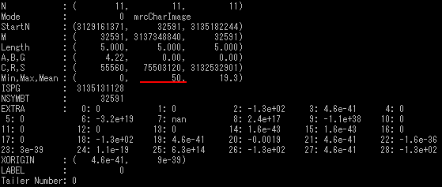

mrcImageSphere
オプション一覧
オプション
必須項目/選択項目
説明
デフォルト
-o
必須
出力ファイル設定
NULL
-size
選択
ピクセルサイズを設定
5
-r
選択
作成される球の半径を設定
5
-weight
選択
最大値を設定
100
-m
選択
モード
0
-h
選択
ヘルプを表示
モードの詳細
モード
説明
0
char→1バイト
2
float→4バイト
******実行例******
------オプション必須項目のみの場合------
------オプション -size------
-size=1.72に設定し実行
------オプション -r------
-r=50に設定し実行
------オプション -weight------
-weight=50に設定し実行

------オプション -m------
-m=2に設定し実行